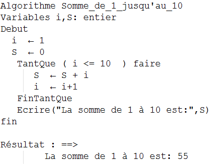
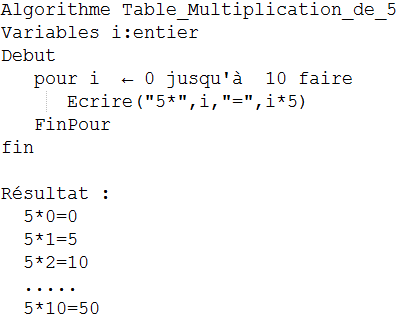
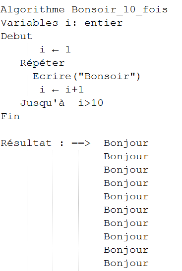
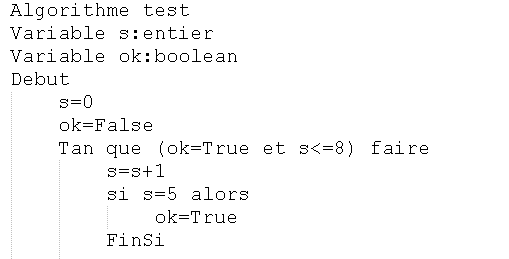

Introduction:
-
La boucle Tant Que …. Faire :
La boucle Pour …. Faire
La boucle Répéter…jusqu’à
Prenons d’une saisie au clavier, par exemple, on pose une question à laquelle doit répondre par « oui » ou « non ». L’utilisateur risque de taper autre chose (une autre lettre), le programme peut soit planter par une erreur d’exécution soit dérouler normalement jusqu’au bout, mais en produisant des résultats fantaisistes. Pour éviter ce problème, on peut mettre en place un contrôle de saisie pour vérifier que les données entrées au clavier correspondent bien à celles attendues par l’algorithme.
La boucle Tant que permet de répéter un traitement
tant que la condition est vraie.
Syntaxe :

==> L’exécution de la boule dépend de la valeur de la condition. Si est vrai, l’algorithme exécute les instructions qui suivent, jusqu’à ce qu’il rencontre la ligne FinTantque .
Il retourne ensuite sur la ligne du Tantque, procède au même examen, et ainsi de suite.
==> La boucle ne s’arrête que lorsque prend la valeur fausse, et dans ce cas le programme poursuit son exécution après FinTantQue.
Remarque: Si la structure TantQue contient la condition ne devient jamais fausse. Le programme tourne
dans une boucle infinie et n’en sort plus.
La boucle pour …. Faire permet de répéter une liste d’instructions
un nombre connu de fois.
==> La variable compteur est de type entier. Elle est initialisée par la valeur initiale,
le compteur augmente sa valeur de 1 automatiquement à chaque tour de boucle jusqu’à la valeur finale.
==> Lorsque la variable compteur vaut la valeur finale, le traitement est exécuté une seule fois
puis le programme sort de la boucle.
Cette boucle permet de répéter une instruction jusqu’à ce
qu’une soit vrai.
==> La liste d’instructions est exécutée, puis la condition est évaluée.
Si elle est fausse, le corps de la boucle est exécuté à nouveau puis la condition est réévaluée et si elle est vraie,
le programme sort de la boucle et exécute l’instruction qui suit Jusqu’à.
Remarque :Cette boucle ne s’utilise en général que pour des menus, elle est dangereuse car il n’y a pas
de vérification de la condition avant d’y entrer.
Application :
Ecrire un algorithme qui calcule la somme
S = 1+2+3+4+…+ 10 utilisant la boucle tanque
Si tu veux voir la correction cliquez sur cette button :

Ecrire un algorithme qui affiche la table de multiplication de 5.
Utilisant la boucle pour.
Si tu veux voir la correction cliquez sur cette button :

En utilisant la boucle Répéter…..jusqu’à,
on écrit un algorithme qui affiche Bonjour 10 fois.
Si tu veux voir la correction cliquez sur cette button :
Quiz:
Tu dois repondre au moin 3 reponses correctement pour acceder aux chapitre suivant :
Quelles boucles peuvent utiliser un compteur afin d'effectuer un nombre d'itérations connu à l'avance ?
La structure répétitive conditionnelle « répéter jusqu’à » permet de répéter...
La structure répétitive conditionnelle « tant que » permet de répéter...
On suppose qu'on veut ecrire un algorithme pour verifier si une chaine alphabétique ou non, qu elle est la meuilleur choix du boucle ?
Quelle est la probleme de dans ce algorithme ? :
